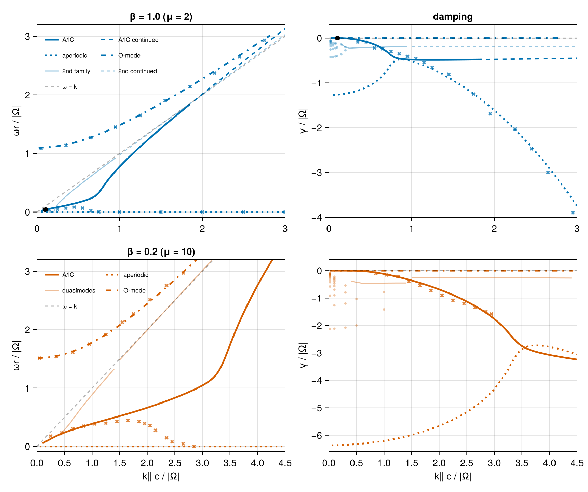
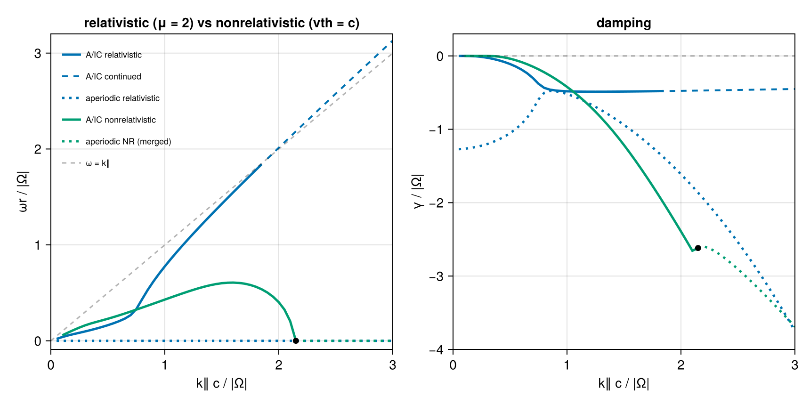
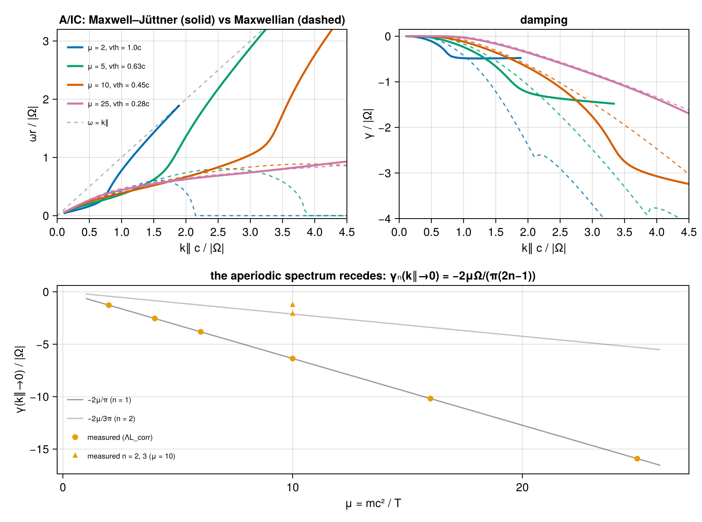

Relativistic pair plasma — (López 2014, Verscharen 2018)
A hot electron–positron pair plasma with isotropic Maxwell–Jüttner momentum distribution, μ = mc²/T = 2Π²/β∥ for two temperatures: β = 1.0 (μ = 2, blue) and β = 0.2 (μ = 10, red)
Ref: López (2014, PoP, 10.1063/1.4894679) and Fig. 5 in Verscharen (2018, JPP, 10.1017/S0022377818000739).
- the quasi-parallel A/IC wave (low
ωr): a weakly damped propagating Alfvén-like mode at smallk∥that turns strongly cyclotron-damped and, at largek∥, runs into the light line; - the ordinary wave (O-mode, high
ωr): a superluminal branch starting atωr ≈ 1.1(β = 1) /1.5(β = 0.2) rising toward the light line,γ ≈ 0throughout; - a nonpropagating (aperiodic) family (
ωr = 0), present at everyk∥with a finite zero-kdamping — a purely relativistic feature.
We verify against the two tabulated roots of the ALPS test_relativistic case (~1 % in Re ω), against their Fig. 5, and cross-check the closed-form Maxwell–Jüttner susceptibility (Swanson time-integral) against the general path (CoupledVDF). A closing section contrasts the same plasma treated nonrelativistically, where the root topology is qualitatively different.
using VlasovMaxwellDispersion
using Printf
using CairoMakiePlasma setup
Normalized to the gyrofrequency |Ω| = 1; Π² = ωp²/Ω² = 1 per species; momenta in mc, k in Ω/c. MaxwellJuttner(μ) feeds the relativistic closed-form tensor. Equal masses and opposite charges make R/L degenerate, so the parallel branch is a single relativistic Alfvén-like mode — and every transverse root of the full determinant is a double zero. All traces on this page therefore work at exactly parallel k on the factorized L-mode (mode = :L, simple zeros); the ALPS comparison and the CoupledVDF cross-checks keep ALPS's own quasi-parallel k⊥ = 10⁻³ full determinant.
pair(vdf) = (NormalizedSpecies(1.0, 1.0, vdf), NormalizedSpecies(-1.0, 1.0, vdf))
plasma2 = pair(MaxwellJuttner(mu=2.0)) ## β = 1.0
plasma10 = pair(MaxwellJuttner(mu=10.0)) ## β = 0.2
kp = 0.0010.001Verification against ALPS (μ = 2)
ALPS test_relativistic roots: columns (k⊥, k∥, Re ω, Im ω), refined from the tabulated values with seeded Muller.
alps = [
(0.001, 0.1, 3.9621e-2, -2.644e-6),
(0.001, 0.10965, 4.3132e-2, -2.2947e-8),
]
for (kpa, kz, re, im) in alps
ω0 = complex(re, im)
sol = solve(DispersionProblem(plasma2, ω0, Wavenumber(kpa, kz)))
ω = sol.omega
@info "k∥=$(kz) ALPS ω=$(round(ω0, sigdigits=4)) VMD ω=$(round(ω, sigdigits=4))"
@info "ΔRe/Re=$(round(abs(real(ω) - real(ω0)) / real(ω0), sigdigits=4)) resid=$(round(sol.resid, sigdigits=4))"
end[ Info: k∥=0.1 ALPS ω=0.03962 - 2.644e-6im VMD ω=0.03919 - 2.543e-5im
[ Info: ΔRe/Re=0.01099 resid=2.278e-14
[ Info: k∥=0.10965 ALPS ω=0.04313 - 2.295e-8im VMD ω=0.04262 - 7.081e-5im
[ Info: ΔRe/Re=0.01187 resid=1.28e-14Re ω agrees to ~1 %. The damping (Im ω ~ 10⁻⁶) is near-marginal and far more sensitive to ALPS's coarse (p⊥,p∥) sampling than the propagation frequency.
Closed-form vs. general relativistic path (μ = 2)
The analytic Swanson susceptibility (MaxwellJuttner) and the general grid-tabulated path (CoupledVDF with Relativistic() closure) are two independent evaluators of the same relativistic tensor. We re-polish representative A/IC roots — the two ALPS points, a propagating hump point, and two purely-damped points — with the CoupledVDF plasma seeded from the closed-form root, and report |Δω|.
plasmaC2 = pair(CoupledVDF(MaxwellJuttner(2.0); para=(-15.0, 15.0), perp=15.0, regime=Relativistic()))
xcheck = [
(0.1, complex(3.9621e-2, -2.644e-6)), (0.10965, complex(4.3132e-2, -2.29e-8)),
(0.5, complex(0.163, -0.11)), (1.5, complex(0.0, -0.939)), (3.0, complex(0.0, -3.749)),
]
for (kz, ω0) in xcheck
a = solve(DispersionProblem(plasma2, ω0, Wavenumber(kp, kz)))
b = solve(DispersionProblem(plasmaC2, a.omega, Wavenumber(kp, kz)))
@printf(
"k∥=%.3f ω=%.5f%+.5fim |Δω|(closed−general)=%.1e\n",
kz, real(a.omega), imag(a.omega), abs(a.omega - b.omega)
)
endk∥=0.100 ω=0.03919-0.00003im |Δω|(closed−general)=3.5e-05
k∥=0.110 ω=0.04262-0.00007im |Δω|(closed−general)=3.7e-05
k∥=0.500 ω=0.16297-0.11048im |Δω|(closed−general)=2.0e-05
k∥=1.500 ω=0.00000-0.93928im |Δω|(closed−general)=2.2e-04
k∥=3.000 ω=0.00000-3.74944im |Δω|(closed−general)=5.8e-04The two paths agree to |Δω| ≲ 6·10⁻⁴ (loosest at the deep-damped k∥ = 3 point, limited by the CoupledVDF momentum-grid truncation), confirming both evaluators resolve the same relativistic mode.
A/IC-related roots
For μ = 2 our transverse dispersion relation contains distinct root families:
- A propagating family continued from the ALPS seed.
ωrrises andγdeepens from0to≈ −0.46byk∥ = 0.85, matching the digitized Fig. 5 blueγthroughk∥ ≈ 0.65(−0.236vs.−0.24atk∥ = 0.65). Its damping then saturates:γbottoms at−0.488neark∥ ≈ 1.2and recovers slowly (−0.480atk∥ = 1.8) whileωr/k∥climbs0.62 → 0.99— the root chases the light line, crossing it neark∥ ≈ 1.9(see Beyond the light line below). The plateau at|γ| ≈ Ω/2is the strongly broadened cyclotron regime: the resonance is smeared by the damping rate itself, soγsaturates at the gyro scale rather than growing withk∥; the slow recovery sets in as the minimum resonant Lorentz factor climbs into thee^{−μγ}tail. - A purely imaginary (aperiodic) family (
ωr = 0, pinned by the pair plasma'sω ↔ −ω̄mirror symmetry), which exists at everyk∥— we trace it continuously fromk∥ = 3down tok∥ = 0.05. Its damping is non-monotonic:γ → −1.271in thek∥ → 0limit, shallows to a minimum|γ| = 0.478atk∥ ≈ 0.86, then dives to−3.75atk∥ = 3— Fig. 5's blue dive (≈ −3.9). The finite zero-kdamping is purely relativistic: the cyclotron resonanceω = Ω/γ_Lis smeared over the Maxwell–Jüttner spread of Lorentz factors (⟨γ_L⟩ ~ 2atμ = 2), so an overdamped oscillation decays atO(Ω)even without Doppler broadening. In fact the wholek∥ → 0aperiodic spectrum is an exact odd-harmonic ladder,γ_n → −2μΩ/(π(2n−1))— derived in the experiments report: continuing the resonance to aperiodicω = −i|γ|makes the resonant energy imaginary,γ_res = iΩ/|γ|, so the Jüttner factore^{−μγ_res}becomes a pure phase; electron and positron contribute conjugate phases whose interference vanishes whencos(μΩ/|γ|) = 0(verified to10⁻⁷forμ = 2…25,n = 1…3). The displayed family is itsn = 1member,−4/π = −1.27324atμ = 2. On the imaginary axis the deflated determinant is exactly real, so the root is unambiguous (resid ~ 10⁻¹⁰). - A second, more heavily damped family: aperiodic at small
k∥(γ = −0.143atk∥ = 0.15,−0.201at0.2), leaving the axis neark∥ ≈ 0.21as a propagating damped pair (both relativistic evaluators confirm its axis roots toresid ~ 10⁻¹⁴). Both of its asymptotic ends are instructive:- small
k∥: it is the shallow end of the aperiodic ladderγ_n = −2μΩ/(π(2n−1))above, which densifies ask∥ → 0(2 axis roots within|γ| < 0.5atk∥ = 0.2, 4 at0.05, 10 at0.02) — discrete damped roots crowding toward thek = 0relativistic cyclotron continuumω = Ω/γ_L ∈ (0, Ω]; the deepn = 1member (family 2 above) sits below the ladder and is the lone axis survivor fork∥ ≳ 0.25; - large
k∥: it crosses the light line atk∥ ≈ 1.73and then traverses the whole resonance band0 < ωr² − k∥²c² < Ω²with nearly flat damping (γ ≈ −0.196 → −0.177overk∥ = 1 → 6); at the band edge (k∥ ≈ 6.1) the damping shuts off and the root lands on the real superluminal EM branchω² = k∥²c² + 2Π²K₁(μ)/K₂(μ). μ = 10counterpart — a stack: atk∥ = 1.5the hotter case has a single such quasimode, butμ = 10carries at least five (ω = 1.482−0.24i, 1.475−0.29i, 1.434−0.45i, 1.361−0.63i, 1.051−1.05i), hugging the light line from below — the member count at fixedk∥scales withμlike thek∥ → 0ladder. Each keeps nearlyk-independent damping (third member:γ = −0.45 ± 0.01overk∥ = 0.6–1.4). Unlikeμ = 2's, the least-dampedμ = 10member does not land on the EM branch at the band edge: atμ = 2the EM asymptote2Π²K₁/K₂ = 1.10sits essentially at the edgeΩ², so the arriving quasimode finds a marginal real mode to merge with; atμ = 10the EM branch (1.72) is well separated, and the quasimode crosses the real-ωband edge at finite depth (γ ≈ −0.28, edge broadened by its own damping) and persists as a distinct damped mode (traced tok∥ = 9,γ → −0.31).
- small
A methodological trap: equal masses make R and L exactly degenerate, so the determinant's transverse factor appears squared — every imaginary-axis root is a touching double zero (the real-valued axis function kisses zero from below without a sign change), invisible to sign-change scans. This investigation is why DispersionProblem/DispersionFunction now take mode = :R/:L/:P at exactly parallel k: the single factor has simple zeros, and everything on this page runs on it.
The damping rates of families 1 and 2 happen to be close near k∥ = 0.85, but the roots do not coalesce there (ω ≈ 0.53 − 0.46im versus ω ≈ −0.48im); we therefore do not splice them into one eigenmode branch. The propagating root rises toward the light line instead of following the published finite-ωr descent. This is precisely the "large-k∥/low-ωr end of the A/IC branch" where Verscharen et al. §4.4 flag the visible deviation between López and ALPS — ALPS's own ωr tails in Fig. 5 overshoot the López descent the same way.
For μ = 10 the traced propagating root's γ tracks the digitized red curve to ≲ 0.2 through k∥ = 3 (−1.76 vs. −1.58), while its ωr keeps rising past the published peak (≈ 0.44 at k∥ ≈ 1.65) instead of descending — the same §4.4 deviation zone, stronger at this temperature in our determinant. The μ = 10 aperiodic counterpart exists at every k∥ as well, but sits far deeper: γ → −20/π = −6.366 as k∥ → 0 (the same −2μΩ/π law), rising to a minimum |γ| ≈ 2.73 near k∥ ≈ 3.9 — below the Fig. 5 frame until k∥ ≈ 3.05, which is why the published red curves show no dive within the plotted window and the red γ is carried by the propagating root alone. (Muller continuation of this family jumps onto the propagating root during their close pass near k∥ ≈ 3.2–3.3; the full curve below is charted through the single-branch López ΛL instead, whose axis roots are plain sign changes.)
Branch continuation
function trace(plasma, kzs, seed)
ω = similar(kzs, ComplexF64)
s = seed
for i in eachindex(kzs)
s = solve(DispersionProblem(plasma, s, Wavenumber(0.0, kzs[i]); mode=:L)).omega
ω[i] = s
end
return ω
end
# μ=2 propagating: forward from the ALPS k∥=0.1 seed (backward to 0.05), up to
# the last subluminal point k∥ = 1.85 (the root crosses ωr = k∥c near 1.9)
kz2p = collect(0.05:0.05:1.85)
j0 = findfirst(==(0.1), kz2p)
ω2p = similar(kz2p, ComplexF64)
ω2p[j0:end] = trace(plasma2, kz2p[j0:end], complex(alps[1][3], alps[1][4]))
ω2p[1:(j0-1)] = reverse(trace(plasma2, reverse(kz2p[1:(j0-1)]), ω2p[j0]))
# μ=2 purely imaginary family over the full range, both ways from k∥ = 0.85
kz2d = collect(0.05:0.05:3.0)
j0d = findfirst(==(0.85), kz2d)
ω2d = similar(kz2d, ComplexF64)
ω2d[j0d:end] = trace(plasma2, kz2d[j0d:end], complex(1.0e-4, -0.478))
ω2d[1:(j0d-1)] = reverse(trace(plasma2, reverse(kz2d[1:(j0d-1)]), ω2d[j0d]))
# μ=2 second damped family: aperiodic at small k∥, leaving the axis near
# k∥ ≈ 0.21 as a propagating damped pair. Directly evaluable to k∥ = 0.95
# (light-line crossing at k∥ ≈ 1.73); continued across the resonance band by
# the corrected closed form below.
kz2s = collect(0.15:0.05:0.95)
ω2s = similar(kz2s, ComplexF64)
ω2s[1] = trace(plasma2, [0.15], complex(0.0, -0.143))[1]
ω2s[2] = trace(plasma2, [0.2], complex(0.0, -0.2005))[1]
ω2s[3:end] = trace(plasma2, kz2s[3:end], complex(0.13, -0.227))
# The aperiodic ladder at small k∥ (script 09: axis roots of the single-branch
# López ΛL, real on the imaginary axis, so plain sign changes — no double-zero
# obstruction). The count grows as k∥ → 0: discrete damped roots crowding
# toward the k = 0 relativistic cyclotron continuum ω = Ω/γ_L ∈ (0, Ω].
ladder = (
(0.02, [-0.0547, -0.0601, -0.0691, -0.0799, -0.0937, -0.1122, -0.1386, -0.1797, -0.2531, -0.4235]),
(0.05, [-0.121, -0.1669, -0.2444, -0.4184]),
(0.08, [-0.1134, -0.1294, -0.2265, -0.4087]),
(0.1, [-0.2068, -0.3993]),
(0.15, [-0.1432, -0.3616]),
(0.2, [-0.2005, -0.2708]),
)
# μ=10: single propagating root; ωr departs the published
# descent past k≈1.8. Fresh near-marginal seeds below k∥ ≈ 0.3
# make Muller wander to the mirror (negative-frequency) root, so continue
# forward and backward from a robust k∥ = 0.3 seed.
kz10 = collect(0.1:0.05:4.5)
j10 = findfirst(==(0.3), kz10)
ω10 = similar(kz10, ComplexF64)
ω10[j10:end] = trace(plasma10, kz10[j10:end], complex(0.155, -1.0e-4))
ω10[1:(j10-1)] = reverse(trace(plasma10, reverse(kz10[1:(j10-1)]), ω10[j10]))
# μ=10 aperiodic family, VMD-traceable part (3.3–4.5; below that, Muller
# jumps onto the propagating family during their close pass)
kz10d = collect(3.3:0.05:4.5)
j10d = findfirst(==(3.6), kz10d)
ω10d = similar(kz10d, ComplexF64)
ω10d[j10d:end] = trace(plasma10, kz10d[j10d:end], complex(0.0, -2.767))
ω10d[1:(j10d-1)] = reverse(trace(plasma10, reverse(kz10d[1:(j10d-1)]), ω10d[j10d]))
# μ=10 aperiodic family over the full range (script 09 ladder method, ΛL sign
# changes; γ(k∥→0) = −20/π = −6.366), and its small-k ladder members
ap10 = [
0.05 -6.3658; 0.25 -6.3564; 0.5 -6.3267; 0.75 -6.2766; 1.0 -6.2051;
1.25 -6.1106; 1.5 -5.9909; 1.75 -5.8427; 2.0 -5.661; 2.25 -5.4383;
2.5 -5.1623; 2.75 -4.8102; 3.0 -4.3338; 3.25 -3.6113;
]
ladder10 = (
(0.02, [-0.095, -0.104, -0.112, -0.122, -0.132, -0.145, -0.161, -0.18, -0.203, -0.234, -0.275, -0.334, -0.423, -0.578, -0.909, -2.122]),
(0.1, [-0.221, -0.266, -0.302, -0.346, -0.399, -0.468, -0.561, -0.693, -0.898, -1.265, -2.117]),
(0.3, [-0.541, -0.796, -1.198, -2.079]),
(0.5, [-1.031, -1.997]),
(1.0, [-0.78, -1.413]),
)
# Two members of the μ=10 in-band quasimode stack (script 09 / ΛL trace):
# the least-damped (k∥ = 1.5–4.5) and the third member (0.4–1.4)
qm10a = [
1.5 1.482 -0.2422; 1.8 1.7891 -0.2434; 2.0 1.9932 -0.2449;
2.4 2.4017 -0.249; 2.8 2.811 -0.2537; 3.2 3.2208 -0.2582;
3.6 3.6307 -0.2625; 4.0 4.0406 -0.2665; 4.4 4.4506 -0.2705;
]
qm10b = [
0.4 0.1752 -0.3852; 0.6 0.3976 -0.458; 0.8 0.6553 -0.4573;
1.0 0.8872 -0.453; 1.2 1.1094 -0.4503; 1.4 1.3264 -0.4495;
]6×3 Matrix{Float64}:
0.4 0.1752 -0.3852
0.6 0.3976 -0.458
0.8 0.6553 -0.4573
1.0 0.8872 -0.453
1.2 1.1094 -0.4503
1.4 1.3264 -0.4495Beyond the light line
The μ = 2 propagating trace stops at k∥ = 1.85 for a structural reason: the root crosses ωr = k∥c near k∥ ≈ 1.9, and damped superluminal ω is unreachable by any real-sliced momentum integral — the resonance-ellipse apex branch point crosses the integration path (docs/relativistic.md), so both relativistic evaluators warn and stop being the analytic continuation. The corrected closed-form López continuation (experiments/lopez-anomalous-zone/09_superluminal_continuation.jl), whose analytic support endpoints remain holomorphic through the gap k∥c < ωr < √(k∥²c² + Ω²) (defect ≲ 4·10⁻⁶, matching this page's roots to 2·10⁻⁵ on the subluminal overlap), carries the branch across: it stays slightly superluminal (ωr/k∥ → 1.04) with slowly recovering damping — relativistic cyclotron resonance survives v_ph > c because the resonant ellipse persists while ωr² − k∥²c² ≲ Ω², exponentially fading as the resonant Lorentz factors climb. Precomputed by script 09:
aic_cont = [
1.9 1.89877 -0.47812; 2.0 2.01352 -0.47594; 2.1 2.12748 -0.47367;
2.2 2.24077 -0.47134; 2.3 2.35348 -0.46893; 2.4 2.46568 -0.46646;
2.5 2.57742 -0.46394; 2.6 2.68876 -0.46137; 2.7 2.79975 -0.45874;
2.8 2.91040 -0.45606; 2.9 3.02077 -0.45333; 3.0 3.13085 -0.45055;
]12×3 Matrix{Float64}:
1.9 1.89877 -0.47812
2.0 2.01352 -0.47594
2.1 2.12748 -0.47367
2.2 2.24077 -0.47134
2.3 2.35348 -0.46893
2.4 2.46568 -0.46646
2.5 2.57742 -0.46394
2.6 2.68876 -0.46137
2.7 2.79975 -0.45874
2.8 2.9104 -0.45606
2.9 3.02077 -0.45333
3.0 3.13085 -0.45055The second family crosses the light line earlier (k∥ ≈ 1.73) and then traverses the entire resonance band with nearly flat damping (γ ≈ −0.196 → −0.177 over k∥ = 1 → 6) while ωr² − k∥²c² climbs from 0 to Ω². At the band edge (k∥ ≈ 6.1) even the optimal relativistic Doppler shift can no longer satisfy the resonance (see The role of the Doppler shift below), the damping shuts off, and the root lands on the real superluminal EM branch ω² = k∥²c² + 2Π² K₁(μ)/K₂(μ) (= k∥²c² + 1.102 at μ = 2). Script 09 segment for the figure:
f2_cont = [
1.0 0.97668 -0.19558; 1.1 1.08077 -0.19447; 1.2 1.18446 -0.19352;
1.3 1.28786 -0.19269; 1.4 1.39101 -0.19197; 1.5 1.49397 -0.19134;
1.6 1.59678 -0.19077; 1.7 1.69945 -0.19026; 1.8 1.80201 -0.18979;
1.9 1.90449 -0.18937; 2.0 2.00688 -0.18898; 2.1 2.10920 -0.18862;
2.2 2.21147 -0.18828; 2.3 2.31369 -0.18797; 2.4 2.41586 -0.18767;
2.5 2.51799 -0.18738; 2.6 2.62009 -0.18711; 2.7 2.72215 -0.18684;
2.8 2.82419 -0.18659; 2.9 2.92620 -0.18634; 3.0 3.02819 -0.18609;
]21×3 Matrix{Float64}:
1.0 0.97668 -0.19558
1.1 1.08077 -0.19447
1.2 1.18446 -0.19352
1.3 1.28786 -0.19269
1.4 1.39101 -0.19197
1.5 1.49397 -0.19134
1.6 1.59678 -0.19077
1.7 1.69945 -0.19026
1.8 1.80201 -0.18979
1.9 1.90449 -0.18937
⋮
2.2 2.21147 -0.18828
2.3 2.31369 -0.18797
2.4 2.41586 -0.18767
2.5 2.51799 -0.18738
2.6 2.62009 -0.18711
2.7 2.72215 -0.18684
2.8 2.82419 -0.18659
2.9 2.9262 -0.18634
3.0 3.02819 -0.18609O-modes
Superluminal (ωr > k∥): the closed-form Landau continuation is unsupported for damped superluminal ω, but the O-mode is near-marginal (γ ≈ 0), so we locate it on the real axis as the |det 𝒟| → 0 minimum via the CoupledVDF path, continued in k∥. Momentum bounds follow the thermal spread (±15 mc at μ = 2, ±5 mc at μ = 10 — the fixed-size grid loses the distribution peak if the box is much wider than the VDF).
using VlasovMaxwellDispersion: DispersionFunction
function omode(plasmaC, kzs, wr0)
out = similar(kzs)
wr = wr0
for i in eachindex(kzs)
g = DispersionFunction(plasmaC, Wavenumber(kp, kzs[i]))
f = w -> abs(g(complex(w, 0.0)))
lo, hi = max(0.9wr, kzs[i] + 0.02), wr + 0.4 + 0.25kzs[i]
for _ in 1:60
m1, m2 = (2lo + hi) / 3, (lo + 2hi) / 3
f(m1) < f(m2) ? (hi = m2) : (lo = m1)
end
wr = (lo + hi) / 2
out[i] = wr
end
return out
end
plasmaC10 = pair(CoupledVDF(MaxwellJuttner(10.0); para=(-5.0, 5.0), perp=5.0, regime=Relativistic()))
kzo = collect(0.02:0.2:3.0)
kzo10 = collect(0.02:0.2:4.42)
ωo2 = omode(plasmaC2, kzo, 1.1)
ωo10 = omode(plasmaC10, kzo10, 1.5)23-element Vector{Float64}:
1.5135109411307224
1.5266635581320558
1.561671398038908
1.6179653447860824
1.694199927145017
1.7885096426020506
1.8988477674152446
2.0231324034993934
2.159338361369257
2.3055751637654476
⋮
3.1359155563683743
3.3145806155091
3.495856965643985
3.6793162098503687
3.8646126673613743
4.051466068425801
4.239647872924669
4.428970558667778
4.619279242159558Quantitative check against digitized Fig. 5
fig5 = (
aic_wr2=[
0.15 0.04; 0.25 0.044; 0.35 0.066; 0.45 0.084; 0.55 0.066;
0.65 0.022; 0.75 0.003; 1.0 0.0; 1.5 0.0; 2.0 0.0; 2.5 0.0; 3.0 0.0
],
aic_gm2=[
0.35 -0.09; 0.45 -0.09; 0.55 -0.22; 0.65 -0.24; 0.75 -0.3;
0.85 -0.35; 0.95 -0.41; 1.05 -0.46; 1.15 -0.55; 1.25 -0.66; 1.45 -0.81;
1.75 -1.25; 1.95 -1.69; 2.25 -2.03; 2.45 -2.47; 2.65 -3.0; 2.95 -3.9
],
o_wr2=[
0.05 1.09; 0.35 1.14; 0.65 1.27; 0.95 1.45; 1.25 1.65; 1.55 1.9;
1.85 2.14; 2.15 2.37; 2.45 2.65; 2.75 2.93
],
aic_wr10=[
0.25 0.177; 0.45 0.234; 0.65 0.304; 0.85 0.348; 1.05 0.385;
1.25 0.4; 1.45 0.425; 1.65 0.444; 1.85 0.425; 1.95 0.393; 2.05 0.356;
2.15 0.275; 2.35 0.15; 2.45 0.077; 2.65 0.044; 2.85 0.0
],
aic_gm10=[
0.85 -0.099; 1.05 -0.16; 1.25 -0.214; 1.45 -0.386; 1.65 -0.54;
1.85 -0.722; 2.05 -0.902; 2.25 -1.08; 2.45 -1.19; 2.65 -1.339;
2.85 -1.499; 2.95 -1.581
],
o_wr10=[
0.05 1.511; 0.35 1.537; 0.65 1.614; 0.95 1.749; 1.25 1.918;
1.55 2.127; 1.75 2.274; 2.05 2.512; 2.35 2.758; 2.65 2.971
],
)
println("μ=10 A/IC γ vs digitized Fig. 5 (red):")
for r in eachrow(fig5.aic_gm10)
kd, gd = r
i = argmin(abs.(kz10 .- kd))
@printf(" k∥=%.2f VMD γ=%+.3f Fig5 γ=%+.3f Δ=%+.3f\n", kz10[i], imag(ω10[i]), gd, imag(ω10[i]) - gd)
end
println("O-mode ωr (VMD | Fig5):")
for (m, ωo, ks, lab) in ((fig5.o_wr10, ωo10, kzo10, "μ=10"), (fig5.o_wr2, ωo2, kzo, "μ=2 "))
for j in (1, 5, 10)
kd, wd = m[j, 1], m[j, 2]
i = argmin(abs.(ks .- kd))
@printf(" %s: k∥=%.2f %.3f | %.3f\n", lab, ks[i], ωo[i], wd)
end
endμ=10 A/IC γ vs digitized Fig. 5 (red):
k∥=0.85 VMD γ=-0.069 Fig5 γ=-0.099 Δ=+0.030
k∥=1.05 VMD γ=-0.139 Fig5 γ=-0.160 Δ=+0.021
k∥=1.25 VMD γ=-0.228 Fig5 γ=-0.214 Δ=-0.014
k∥=1.45 VMD γ=-0.330 Fig5 γ=-0.386 Δ=+0.056
k∥=1.65 VMD γ=-0.446 Fig5 γ=-0.540 Δ=+0.094
k∥=1.85 VMD γ=-0.576 Fig5 γ=-0.722 Δ=+0.146
k∥=2.05 VMD γ=-0.722 Fig5 γ=-0.902 Δ=+0.180
k∥=2.25 VMD γ=-0.887 Fig5 γ=-1.080 Δ=+0.193
k∥=2.45 VMD γ=-1.074 Fig5 γ=-1.190 Δ=+0.116
k∥=2.65 VMD γ=-1.288 Fig5 γ=-1.339 Δ=+0.051
k∥=2.85 VMD γ=-1.539 Fig5 γ=-1.499 Δ=-0.040
k∥=2.95 VMD γ=-1.683 Fig5 γ=-1.581 Δ=-0.102
O-mode ωr (VMD | Fig5):
μ=10: k∥=0.02 1.514 | 1.511
μ=10: k∥=1.22 1.899 | 1.918
μ=10: k∥=2.62 2.960 | 2.971
μ=2 : k∥=0.02 1.095 | 1.090
μ=2 : k∥=1.22 1.637 | 1.650
μ=2 : k∥=2.82 3.017 | 2.930Figure 5 reproduction
One row per temperature. Blue row: β = 1 (μ = 2, k∥ ≤ 3); red row: β = 0.2 (μ = 10, extended to k∥ = 4.5 and to γ = −6.6 so its aperiodic family is visible over the full range — from the −20/π plateau at k∥ → 0 through the dip at k∥ ≈ 3.9 — with its own ladder members as dots). Crosses: digitized Fig. 5; black dots: tabulated ALPS roots. Line style identifies the root family: solid A/IC-like propagating (dashed past the light line: corrected-continuation segments), dash-dot O-mode, dotted aperiodic — for μ = 2 shown over the full k∥ range (note the finite γ → −1.271 plateau at small k∥ and the |γ| minimum at k∥ ≈ 0.86). Thin translucent lines: the in-band quasimodes — for μ = 2 the second damped family whose dashed continuation traverses the resonance band with γ ≈ −0.19, for μ = 10 two members of its quasimode stack; small dots at small k∥: the aperiodic ladder members they emerge from. These styles deliberately do not connect the distinct propagating and purely imaginary families.
blu, red = Makie.wong_colors()[1], Makie.wong_colors()[6]
fig = Figure(size=(860, 720))
axr2m = Axis(
fig[1, 1]; ylabel="ωr / |Ω|",
title="β = 1.0 (μ = 2)", limits=(0, 3, -0.09, 3.2)
)
axi2m = Axis(fig[1, 2]; ylabel="γ / |Ω|", title="damping", limits=(0, 3, -4, 0.3))
axr10 = Axis(
fig[2, 1]; xlabel="k∥ c / |Ω|", ylabel="ωr / |Ω|",
title="β = 0.2 (μ = 10)", limits=(0, 4.5, -0.09, 3.2)
)
axi10 = Axis(fig[2, 2]; xlabel="k∥ c / |Ω|", ylabel="γ / |Ω|", limits=(0, 4.5, -6.6, 0.4))
# μ=2 row
lines!(axr2m, kz2p, real.(ω2p); color=blu, linewidth=2.5, label="A/IC")
lines!(axi2m, kz2p, imag.(ω2p); color=blu, linewidth=2.5)
lines!(axr2m, aic_cont[:, 1], aic_cont[:, 2]; color=blu, linewidth=2.0, linestyle=:dash, label="A/IC continued")
lines!(axi2m, aic_cont[:, 1], aic_cont[:, 3]; color=blu, linewidth=2.0, linestyle=:dash)
lines!(axr2m, kz2d, zero(kz2d); color=blu, linewidth=2.5, linestyle=:dot, label="aperiodic")
lines!(axi2m, kz2d, imag.(ω2d); color=blu, linewidth=2.5, linestyle=:dot)
lines!(axr2m, kzo, ωo2; color=blu, linewidth=2.5, linestyle=:dashdot, label="O-mode")
lines!(axi2m, kzo, zero(kzo); color=blu, linewidth=2.5, linestyle=:dashdot)
lines!(axr2m, kz2s, real.(ω2s); color=(blu, 0.4), linewidth=1.5, label="2nd family")
lines!(axi2m, kz2s, imag.(ω2s); color=(blu, 0.4), linewidth=1.5)
lines!(axr2m, f2_cont[:, 1], f2_cont[:, 2]; color=(blu, 0.4), linewidth=1.5, linestyle=:dash, label="2nd continued")
lines!(axi2m, f2_cont[:, 1], f2_cont[:, 3]; color=(blu, 0.4), linewidth=1.5, linestyle=:dash)
for (kl, γs) in ladder
scatter!(axi2m, fill(kl, length(γs)), γs; color=(blu, 0.35), markersize=5)
end
for (m, ax) in ((fig5.aic_wr2, axr2m), (fig5.o_wr2, axr2m), (fig5.aic_gm2, axi2m))
scatter!(ax, m[:, 1], m[:, 2]; color=(blu, 0.75), marker=:xcross, markersize=8)
end
scatter!(axr2m, [a[2] for a in alps], [a[3] for a in alps]; color=:black, markersize=9)
scatter!(axi2m, [a[2] for a in alps], [a[4] for a in alps]; color=:black, markersize=9)
lines!(axr2m, 0:3, 0:3; color=(:black, 0.3), linestyle=:dash, label="ω = k∥")
hlines!(axi2m, [0.0]; color=(:black, 0.3), linestyle=:dash)
axislegend(axr2m; position=:lt, framevisible=false, labelsize=9, nbanks=2)
# μ=10 row
lines!(axr10, kz10, real.(ω10); color=red, linewidth=2.5, label="A/IC")
lines!(axi10, kz10, imag.(ω10); color=red, linewidth=2.5)
kap10 = vcat(ap10[:, 1], kz10d)
lines!(axr10, kap10, zero(kap10); color=red, linewidth=2.5, linestyle=:dot, label="aperiodic")
lines!(axi10, kap10, vcat(ap10[:, 2], imag.(ω10d)); color=red, linewidth=2.5, linestyle=:dot)
for (kl, γs) in ladder10
scatter!(axi10, fill(kl, length(γs)), γs; color=(red, 0.35), markersize=5)
end
lines!(axr10, qm10a[:, 1], qm10a[:, 2]; color=(red, 0.4), linewidth=1.5, label="quasimodes")
lines!(axi10, qm10a[:, 1], qm10a[:, 3]; color=(red, 0.4), linewidth=1.5)
lines!(axr10, qm10b[:, 1], qm10b[:, 2]; color=(red, 0.4), linewidth=1.5)
lines!(axi10, qm10b[:, 1], qm10b[:, 3]; color=(red, 0.4), linewidth=1.5)
lines!(axr10, kzo10, ωo10; color=red, linewidth=2.5, linestyle=:dashdot, label="O-mode")
lines!(axi10, kzo10, zero(kzo10); color=red, linewidth=2.5, linestyle=:dashdot)
for (m, ax) in ((fig5.aic_wr10, axr10), (fig5.o_wr10, axr10), (fig5.aic_gm10, axi10))
scatter!(ax, m[:, 1], m[:, 2]; color=(red, 0.75), marker=:xcross, markersize=8)
end
lines!(axr10, 0:4, 0:4; color=(:black, 0.3), linestyle=:dash, label="ω = k∥")
hlines!(axi10, [0.0]; color=(:black, 0.3), linestyle=:dash)
axislegend(axr10; position=:lt, framevisible=false, labelsize=9, nbanks=2)
fig
Nonrelativistic contrast
The same pair plasma handed to the nonrelativistic theory: a Maxwellian with vth = √(2/μ) c, the NR limit of Maxwell–Jüttner. At μ = 2 that is vth = c — not a physical NR plasma, and that is the point: this is what the NR formulas produce at this temperature.
plasmaM = pair(Maxwellian(sqrt(2 / 2.0)))
kzM = collect(0.1:0.05:3.0)
ωM = trace(plasmaM, kzM, complex(0.057, -1.0e-6))
jm = findfirst(i -> abs(real(ωM[i])) < 1.0e-4, eachindex(ωM)) ## merge onto the axis
@printf("NR branch merges onto the imaginary axis at k∥ ≈ %.2f (ω = %.4f%+.4fim)\n",
kzM[jm], real(ωM[jm]), imag(ωM[jm]))NR branch merges onto the imaginary axis at k∥ ≈ 2.15 (ω = 0.0000-2.6182im)The NR root topology is qualitatively different — and it is exactly the topology the published (artifact) curves mimic:
- the NR branch's
ωrrises to a hump (≈ 0.61atk∥ ≈ 1.6), descends to zero, and merges onto the imaginary axis atk∥ ≈ 2.13, continuing as a purely damped aperiodic root — a textbook underdamped → overdamped transition. Nothing forbids it: NR resonant velocities(ωr ± Ω)/k∥are unbounded, the Gaussian has particles at everyv, so cyclotron damping grows withk∥without limit (no plateau) and overdamps the mode. - the NR dispersion function is built from the plasma
Zfunction — an entire function. Landau continuation below the axis is trivial and unique; there is no branch point, no light line, and no way to make López'sθ-term mistake.
What is non-trivial relativistically, by contrast:
- Compact resonant support
|v| ≤ cputs branch points of the dispersion function atω = ±k∥c(and±√(k∥²c² + Ω²)). The propagating branch cannot overdamp — cyclotron damping saturates at|γ| ≈ Ω/2and the root surfs the light line superluminally instead of descending to the axis. All the continuation subtlety (theθ-term López got wrong, the Heaviside support endpoints) lives on this compact support: the descent-and-merge scenario their formula produces is plausible precisely because it is what the familiar NR topology does — but relativistically it is an artifact. - The relativistic mass spread smears the cyclotron line into a continuum (
ω = Ω/γ_L,γ_L ∈ [1,∞)), so the aperiodic family keeps a finite dampingγ → −1.271ask∥ → 0. Nonrelativistically the resonance is sharp and zero-kcollisionless damping of this mode is impossible — damping there needs Doppler broadeningk∥ vth. - Two coexisting families instead of one branch changing character: the relativistic propagating and aperiodic roots never merge (closest approach at
k∥ ≈ 0.85,ω ≈ 0.53 − 0.46imvs−0.48im); the NR case has one branch that transitions at a genuine merge point.
The role of the Doppler shift
The parallel resonance condition is γ_L (ω − k∥ v∥) = ±Ω: a Doppler shift k∥ v∥ composed with the relativistic mass shift Ω → Ω/γ_L. Every result above sorts into one of three Doppler regimes:
- No Doppler (
k∥ → 0): nonrelativistically the resonance collapses to the sharp lineω = ±Ωand collisionless damping of low-frequency roots vanishes. Relativistically the mass shift alone spreads the line into the continuumω = Ω/γ_L ∈ (0, Ω], which is what keeps the aperiodic family damped at zerok∥(γ → −1.271) and supplies the ladder of discrete damped roots crowding toward that continuum ask∥ → 0. The zero-kdamping here owes nothing to Doppler. - Bounded Doppler (finite
k∥, relativistic): with|v∥| < cthe accessible Doppler shifts are capped atk∥c, so over all particlesmin_v γ_L(ω − k∥v∥) = √(ω² − k∥²c²)(forω > k∥c) and resonance is possible iffω² − k∥²c² ≤ Ω². This single inequality organizes the large-k∥physics: the A/IC branch's damping saturates at|γ| ≈ Ω/2instead of growing (the Doppler width stops growing once the resonant support fills), damping legitimately persists for superluminal phase speeds inside the band (the continued A/IC and second-family segments), and the second family's damping shuts off exactly where it exits the band (ωr² − k∥²c² = Ω²atk∥ ≈ 6.1), leaving the undamped EM branch. - Unbounded Doppler (NR): the Gaussian populates every
v, so(ωr ± Ω)/k∥always finds resonant particles, damping grows withk∥without limit, and the branch overdamps — the merge above. The NR theory has no band edge to cross, which is precisely why it cannot reproduce the relativistic topology.
grn = Makie.wong_colors()[3]
fig2 = Figure(size=(860, 430))
axr2 = Axis(
fig2[1, 1]; xlabel="k∥ c / |Ω|", ylabel="ωr / |Ω|",
title="relativistic (μ = 2) vs nonrelativistic (vth = c)", limits=(0, 3, -0.09, 3.2)
)
axi2 = Axis(
fig2[1, 2]; xlabel="k∥ c / |Ω|", ylabel="γ / |Ω|",
title="damping", limits=(0, 3, -4, 0.3)
)
lines!(axr2, kz2p, real.(ω2p); color=blu, linewidth=2.5, label="A/IC relativistic")
lines!(axi2, kz2p, imag.(ω2p); color=blu, linewidth=2.5)
lines!(axr2, aic_cont[:, 1], aic_cont[:, 2]; color=blu, linewidth=2.0, linestyle=:dash, label="A/IC continued")
lines!(axi2, aic_cont[:, 1], aic_cont[:, 3]; color=blu, linewidth=2.0, linestyle=:dash)
lines!(axr2, kz2d, zero(kz2d); color=blu, linewidth=2.5, linestyle=:dot, label="aperiodic relativistic")
lines!(axi2, kz2d, imag.(ω2d); color=blu, linewidth=2.5, linestyle=:dot)
lines!(axr2, kzM[1:jm], real.(ωM[1:jm]); color=grn, linewidth=2.5, label="A/IC nonrelativistic")
lines!(axi2, kzM[1:jm], imag.(ωM[1:jm]); color=grn, linewidth=2.5)
lines!(axr2, kzM[jm:end], real.(ωM[jm:end]); color=grn, linewidth=2.5, linestyle=:dot, label="aperiodic NR (merged)")
lines!(axi2, kzM[jm:end], imag.(ωM[jm:end]); color=grn, linewidth=2.5, linestyle=:dot)
scatter!(axr2, [kzM[jm]], [0.0]; color=:black, markersize=9)
scatter!(axi2, [kzM[jm]], [imag(ωM[jm])]; color=:black, markersize=9)
lines!(axr2, 0:3, 0:3; color=(:black, 0.3), linestyle=:dash, label="ω = k∥")
hlines!(axi2, [0.0]; color=(:black, 0.3), linestyle=:dash)
axislegend(axr2; position=:lt, framevisible=false, labelsize=9)
fig2
Degeneration to the Maxwellian limit
How does the relativistic topology turn into the Maxwellian one as the plasma cools? Scan μ = 2 → 25 (vth/c = √(2/μ) = 1 → 0.28), tracing the A/IC branch of the Maxwell–Jüttner plasma (solid) against its Maxwellian twin (dashed):
function seedtrace(plasma, kzs; k0=0.3)
best = complex(NaN, NaN)
for wr in 0.05:0.02:0.27
r = solve(DispersionProblem(plasma, complex(wr, -1.0e-4), Wavenumber(0.0, k0); mode=:L))
ω = r.omega
(isfinite(ω) && r.resid < 1.0e-8 && 0.01 < real(ω) < k0 && -0.15 < imag(ω) < 0) || continue
(isnan(best) || imag(ω) > imag(best)) && (best = ω)
end
j = findfirst(==(k0), kzs)
ω = similar(kzs, ComplexF64)
ω[j:end] = trace(plasma, kzs[j:end], best)
ω[1:(j-1)] = reverse(trace(plasma, reverse(kzs[1:(j-1)]), ω[j]))
return ω
end
kzt = collect(0.1:0.05:4.5)
mus = (2.0, 5.0, 10.0, 25.0)
ωmj = [seedtrace(pair(MaxwellJuttner(mu=μ)), kzt) for μ in mus]
ωmx = [seedtrace(pair(Maxwellian(sqrt(2 / μ))), kzt) for μ in mus]4-element Vector{Vector{ComplexF64}}:
[0.05737532854946616 - 3.0102124587661202e-12im, 0.08535681343080614 - 2.400097052418756e-16im, 0.11239579843842529 - 3.8690374670978656e-9im, 0.1379360670540275 - 7.264588983371492e-6im, 0.1609160784057066 - 0.0003298398586542559im, 0.18033842987295315 - 0.0026752638207373967im, 0.19715046558703309 - 0.009277371210340885im, 0.2132456250646639 - 0.02092735027027958im, 0.2298417398474189 - 0.037430054597767395im, 0.24737245563758717 - 0.05841454349404323im … 1.910289736996576e-15 - 5.638129826723181im, 2.3572106549171067e-15 - 5.736651405374967im, 2.3323947212069942e-15 - 5.835583700379148im, 2.0409951888417273e-15 - 5.934916608017049im, 2.5327901210481743e-15 - 6.0346405404406465im, 2.0499528861001513e-15 - 6.134746386163331im, 2.1700121822497425e-15 - 6.235225474505327im, 1.9827771105625856e-15 - 6.336069543511004im, 2.283758598091729e-15 - 6.437270710924368im, 2.274115446865365e-15 - 6.538821447866717im]
[0.05755396914479814 + 7.338230133701826e-20im, 0.08598516842507108 - 2.0393025175737314e-16im, 0.11398457320099331 - 1.1307698075652116e-19im, 0.1413762138320721 - 1.0821711952988457e-13im, 0.167945721715439 - 6.361925330692172e-9im, 0.19340231092190613 - 2.0240638044062237e-6im, 0.21727500187037035 - 6.847521131438699e-5im, 0.2388898381960599 - 0.0006407978795405743im, 0.25791965693512137 - 0.002765960985077744im, 0.2748399351569021 - 0.007480771470741986im … -7.104306019148453e-16 - 3.7866738664905917im, 5.248992465249798e-16 - 3.811243818792068im, 4.811586671934817e-16 - 3.8409926522473907im, 2.385188190523753e-16 - 3.874595061144111im, -4.0981159422621103e-16 - 3.911206885356244im, 1.5819915892500893e-12 - 3.9502529079860826im, 3.4103639249868027e-13 - 3.991321301648004im, -2.625285993242517e-16 - 4.034105818891909im, -2.5562179120942915e-16 - 4.0783717682940885im, 4.308614278183474e-17 - 4.123934834383304im]
[0.057612650135309924 + 8.719055251036883e-20im, 0.08618739966511547 - 2.47661730060031e-16im, 0.1144787745879538 - 1.5463263641630295e-19im, 0.1423825242552543 + 2.3118844182606116e-13im, 0.16978447108482883 - 4.869651502280362e-17im, 0.196555417576545 - 4.852323165606591e-12im, 0.22254244888216496 - 9.219288601097861e-9im, 0.2475502261626328 - 1.0711270741114712e-6im, 0.2712944760122938 - 2.6513794507232037e-5im, 0.293359459041712 - 0.0002425790589292192im … 0.885698189966832 - 2.5239842096367573im, 0.884362292109277 - 2.5786221049449476im, 0.88261496575605 - 2.6336234445626134im, 0.8804423346173594 - 2.688986997640656im, 0.8778295099512191 - 2.7447116428064504im, 0.8747604975587099 - 2.800796364923022im, 0.8712180920008997 - 2.8572402520169713im, 0.8671837558619714 - 2.9140424923586665im, 0.8626374814213819 - 2.9712023716797953im, 0.8575576315188375 - 3.028719270514643im]
[0.057647657328786725 + 9.57380238451745e-20im, 0.08630713295466887 - 2.7672481647314115e-16im, 0.1147680284624988 - 1.9201320213959347e-19im, 0.1429618157874449 + 2.7376102203317943e-13im, 0.17081780387167364 + 3.5996522915529354e-19im, 0.1982623595200153 + 2.063991803496597e-12im, 0.22521789913301432 + 7.808890509931634e-14im, 0.251601500070335 + 2.7969042402269523e-15im, 0.2773228454397785 - 8.272628013986648e-12im, 0.3022808782876202 - 2.9266284136766094e-9im … 0.8354284623526518 - 1.3629411700245762im, 0.8391751550444897 - 1.3910383181972046im, 0.8428963666212328 - 1.419291242779839im, 0.8465908132582629 - 1.4477003493931413im, 0.8502571622893467 - 1.476265948766056im, 0.8538940412485078 - 1.504988262951566im, 0.857500045669587 - 1.5338674316198682im, 0.8610737457583624 - 1.5629035183280193im, 0.8646136920477613 - 1.5920965166862366im, 0.8681184201408998 - 1.621446356359106im]The two descriptions converge pointwise but never topologically:
- at
μ = 25the curves are nearly indistinguishable throughk∥ ≈ 3.5(Δωr < 0.02); atμ = 10they part pastk∥ ≈ 2.5; atμ = 2they disagree everywhere beyondk∥ ≈ 0.5; - every Maxwellian branch eventually descends and merges onto the imaginary axis (
k∥ ≈ 2.15atvth = c,≈ 3.9at0.63c, beyond the frame for cooler cases), while every Maxwell–Jüttner branch — at any finite temperature — eventually peels off and rises toward the light line (visible atk∥ ≈ 1,2.5,3.2forμ = 2, 5, 10; deferred past the frame atμ = 25). Cooling only postpones the relativistic behavior to largerk∥; it never removes it. - the aperiodic sector degenerates in a cleaner way still: the exact ladder
γ_n(k∥→0) = −2μΩ/(π(2n−1)) = −(4/π)(c/vth)²Ω/(2n−1)recedes to−i∞asvth/c → 0— the Maxwellian theory's absence of zero-kcollisionless damping is recovered as the entire relativistic aperiodic spectrum being pushed to infinite damping rate.
γ0μ = [2 -1.27324; 4 -2.54648; 6 -3.81972; 10 -6.3662; 16 -10.18592; 25 -15.91549]
cols = Makie.wong_colors()[[1, 3, 6, 4]]
fig3 = Figure(size=(860, 640))
ax3r = Axis(
fig3[1, 1]; xlabel="k∥ c / |Ω|", ylabel="ωr / |Ω|",
title="A/IC: Maxwell–Jüttner (solid) vs Maxwellian (dashed)", limits=(0, 4.5, -0.05, 3.2)
)
ax3i = Axis(fig3[1, 2]; xlabel="k∥ c / |Ω|", ylabel="γ / |Ω|", title="damping", limits=(0, 4.5, -4, 0.15))
for (i, μ) in enumerate(mus)
c = cols[i]
a, b = ωmj[i], ωmx[i]
na = something(findfirst(isnan, a), length(a) + 1) - 1 ## clip at the light-line NaNs
lines!(ax3r, kzt[1:na], real.(a[1:na]); color=c, linewidth=2.5, label="μ = $(Int(μ)), vth = $(round(sqrt(2/μ), digits=2))c")
lines!(ax3i, kzt[1:na], imag.(a[1:na]); color=c, linewidth=2.5)
lines!(ax3r, kzt, real.(b); color=(c, 0.8), linewidth=1.5, linestyle=:dash)
lines!(ax3i, kzt, imag.(b); color=(c, 0.8), linewidth=1.5, linestyle=:dash)
end
lines!(ax3r, 0:4, 0:4; color=(:black, 0.3), linestyle=:dash, label="ω = k∥")
axislegend(ax3r; position=:lt, framevisible=false, labelsize=9)
ax30 = Axis(
fig3[2, 1:2]; xlabel="μ = mc² / T", ylabel="γ(k∥→0) / |Ω|",
title="the aperiodic spectrum recedes: γₙ(k∥→0) = −2μΩ/(π(2n−1))"
)
lines!(ax30, 1 .. 26, μ -> -2μ / π; color=(:black, 0.4), label="−2μ/π (n = 1)")
lines!(ax30, 1 .. 26, μ -> -2μ / 3π; color=(:black, 0.25), label="−2μ/3π (n = 2)")
scatter!(ax30, γ0μ[:, 1], γ0μ[:, 2]; color=Makie.wong_colors()[2], markersize=10, label="measured (ΛL_corr)")
scatter!(ax30, [10.0, 10.0], [-2.12207, -1.27324]; color=Makie.wong_colors()[2], marker=:utriangle, markersize=9, label="measured n = 2, 3 (μ = 10)")
axislegend(ax30; position=:lb, framevisible=false, labelsize=9)
fig3
The A/IC ωr descent: a continuation artifact in the references
Everything on this page matches the published references — the tabulated ALPS roots (~1 % Re ω), the damping curves at both temperatures, and both O-modes — except the A/IC ωr descent ("anomalous zone" of López et al.): López/ALPS show ωr turning down to zero past the hump peak, while our corrected continuation instead carries the rising roots plotted above. At the tested μ = 2 points, our two independent evaluators agree to |Δω| ≲ 6·10⁻⁴.
We adjudicated this numerically, since analytic continuation off the upper half-plane — where all three codes agree and no continuation is needed — is unique:
- Reimplementing López et al. (2014) Eqs. (23)–(26) reproduces their published curves exactly (their formula does carry the descent roots, e.g.
μ = 10peakωr = 0.443atk∥ = 1.7), and matches our root where everyone agrees (ω = 0.03919atk∥ = 0.1— identical to VMD). - AAA rational extrapolation of dense upper-half-plane samples of both functions (held-out residuals
10⁻¹¹–10⁻¹⁰, stable under grid and degree changes) lands on our root (Δ ≤ 0.002) and away from the López descent root (Δ ≈ 0.05–0.5): López's own upper-half-plane values do not continue to their descent root. - The mechanism: their continuation term
θ(the Heaviside-supportedπσΘ(γ−γ₁)Θ(γ₂−γ)in Eqs. 23–24) depends only onRe zandsign(Im z), which enforces continuity across the real axis but violates Cauchy–Riemann below it: the continuedΛ_Lhas holomorphy defect|∂f/∂z̄|/|∂f/∂z| ≈ 0.09–3in the lower half-plane, versus~10⁻⁶for our determinant (and for their ownθ-less integrand). The non-holomorphicΛ_Lacquires a spurious zero — the anomalous-zone descent — with no counterpart in the true continuation. ALPS's fitted continuation partially chases the same artifact, which is why itsωrtails overshoot López's in our direction (their §4.4 deviation).
The corrected root set therefore contains a propagating family that rises to — and, by the corrected continuation, across — the light line, and a distinct purely imaginary family present at every k∥. The finite-ωr descent is not a mode of the Maxwell–Jüttner pair plasma; it is the nonrelativistic topology (descend, merge, overdamp — see the contrast section above) leaking into a relativistic calculation through a non-holomorphic continuation.
This page was generated using Literate.jl.